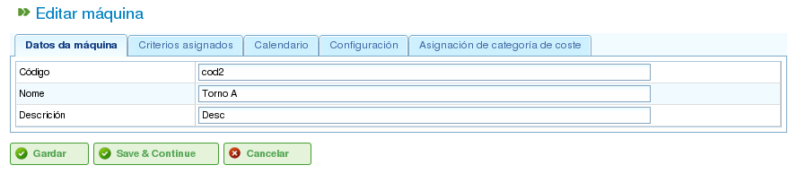

Gestió de recursos
Contents
El programa gestiona dos tipus diferenciats de recursos: personal i màquines.
Recursos de personal
Els recursos de personal representen els treballadors de l'empresa. Les seves característiques clau són:
- Compleixen un o més criteris genèrics o específics de treballadors.
- Poden ser assignats específicament a una tasca.
- Poden ser assignats genèricament a una tasca que requereixi un criteri de recursos.
- Poden tenir un calendari predeterminat o específic, segons sigui necessari.
Recursos de màquines
Els recursos de màquines representen la maquinària de l'empresa. Les seves característiques clau són:
- Compleixen un o més criteris genèrics o específics de màquines.
- Poden ser assignats específicament a una tasca.
- Poden ser assignats genèricament a una tasca que requereixi un criteri de màquines.
- Poden tenir un calendari predeterminat o específic, segons sigui necessari.
- El programa inclou una pantalla de configuració on es pot definir un valor alfa per representar la proporció màquina/treballador.
- El valor alfa indica la quantitat de temps de treballador necessari per operar la màquina. Per exemple, un valor alfa de 0,5 significa que cada 8 hores de funcionament de la màquina requereix 4 hores del temps d'un treballador.
- Els usuaris poden assignar un valor alfa específicament a un treballador, designant-lo per operar la màquina durant aquell percentatge de temps.
- Els usuaris també poden fer una assignació genèrica basada en un criteri, de manera que s'assigna un percentatge d'ús a tots els recursos que compleixen aquell criteri i disposen de temps lliure. L'assignació genèrica funciona de manera similar a l'assignació genèrica per a tasques, tal com es descriu anteriorment.
Gestió de recursos
Els usuaris poden crear, editar i desactivar (però no eliminar permanentment) treballadors i màquines dins de l'empresa navegant a la secció "Recursos". Aquesta secció proporciona les funcionalitats següents:
- Llista de treballadors: Mostra una llista numerada de treballadors, permetent als usuaris gestionar els seus detalls.
- Llista de màquines: Mostra una llista numerada de màquines, permetent als usuaris gestionar els seus detalls.
Gestió de treballadors
La gestió de treballadors s'accedeix anant a la secció "Recursos" i seleccionant "Llista de treballadors". Els usuaris poden editar qualsevol treballador de la llista fent clic a la icona d'edició estàndard.
En editar un treballador, els usuaris poden accedir a les pestanyes següents:
Detalls del treballador: Aquesta pestanya permet als usuaris editar els detalls d'identificació bàsica del treballador:
- Nom
- Cognoms
- Document d'identitat nacional (DNI)
- Recurs basat en cua (vegeu la secció sobre Recursos basats en cua)

Edició de dades personals dels treballadors
Criteris: Aquesta pestanya s'utilitza per configurar els criteris que compleix un treballador. Els usuaris poden assignar qualsevol criteri de treballador o genèric que considerin adequat. És crucial que els treballadors compleixin criteris per maximitzar la funcionalitat del programa. Per assignar criteris:
- Feu clic al botó "Afegir criteris".
- Cerqueu el criteri a afegir i seleccioneu el més adequat.
- Feu clic al botó "Afegir".
- Seleccioneu la data d'inici quan el criteri és aplicable.
- Seleccioneu la data de fi per aplicar el criteri al recurs. Aquesta data és opcional si el criteri es considera indefinit.

Associació de criteris amb treballadors
Calendari: Aquesta pestanya permet als usuaris configurar un calendari específic per al treballador. Tots els treballadors tenen un calendari predeterminat assignat; no obstant això, és possible assignar un calendari específic a cada treballador basat en un calendari existent.

Pestanya de calendari d'un recurs
Categoria de costos: Aquesta pestanya permet als usuaris configurar la categoria de costos que compleix un treballador durant un període determinat. Aquesta informació s'utilitza per calcular els costos associats a un treballador en un projecte.

Pestanya de categoria de costos d'un recurs
L'assignació de recursos s'explica a la secció "Assignació de recursos".
Gestió de màquines
Les màquines es tracten com a recursos a tots els efectes. Per tant, de manera similar als treballadors, les màquines es poden gestionar i assignar a tasques. L'assignació de recursos es tracta a la secció "Assignació de recursos", que explicarà les característiques específiques de les màquines.
Les màquines es gestionen des de l'entrada del menú "Recursos". Aquesta secció té una operació anomenada "Llista de màquines", que mostra les màquines de l'empresa. Els usuaris poden editar o eliminar una màquina d'aquesta llista.
En editar màquines, el sistema mostra una sèrie de pestanyes per gestionar detalls diversos:
Detalls de la màquina: Aquesta pestanya permet als usuaris editar els detalls d'identificació de la màquina:
- Nom
- Codi de la màquina
- Descripció de la màquina

Edició dels detalls de la màquina
Criteris: Com passa amb els recursos de treballadors, aquesta pestanya s'utilitza per afegir criteris que compleix la màquina. Es poden assignar dos tipus de criteris a les màquines: específics de màquines o genèrics. No es poden assignar criteris de treballadors a les màquines. Per assignar criteris:
- Feu clic al botó "Afegir criteris".
- Cerqueu el criteri a afegir i seleccioneu el més adequat.
- Seleccioneu la data d'inici quan el criteri és aplicable.
- Seleccioneu la data de fi per aplicar el criteri al recurs. Aquesta data és opcional si el criteri es considera indefinit.
- Feu clic al botó "Desa i continua".

Assignació de criteris a màquines
Calendari: Aquesta pestanya permet als usuaris configurar un calendari específic per a la màquina. Totes les màquines tenen un calendari predeterminat assignat; no obstant això, és possible assignar un calendari específic a cada màquina basat en un calendari existent.

Assignació de calendaris a màquines
Configuració de la màquina: Aquesta pestanya permet als usuaris configurar la proporció de màquines respecte als recursos de treballadors. Una màquina té un valor alfa que indica la proporció màquina/treballador. Tal com s'ha esmentat anteriorment, un valor alfa de 0,5 indica que es requereix 0,5 persones per cada dia complet de funcionament de la màquina. A partir del valor alfa, el sistema assigna automàticament els treballadors associats a la màquina un cop s'assigna la màquina a una tasca. Associar un treballador a una màquina es pot fer de dues maneres:
- Assignació específica: Assigneu un rang de dates durant el qual el treballador és assignat a la màquina. Aquesta és una assignació específica, ja que el sistema assigna automàticament hores al treballador quan es programa la màquina.
- Assignació genèrica: Assigneu criteris que han de complir els treballadors assignats a la màquina. Això crea una assignació genèrica dels treballadors que compleixen els criteris.

Configuració de màquines
Categoria de costos: Aquesta pestanya permet als usuaris configurar la categoria de costos que compleix una màquina durant un període determinat. Aquesta informació s'utilitza per calcular els costos associats a una màquina en un projecte.

Assignació de categories de costos a màquines
Grups de treballadors virtuals
El programa permet als usuaris crear grups de treballadors virtuals, que no són treballadors reals sinó personal simulat. Aquests grups permeten als usuaris modelar l'augment de la capacitat de producció en moments específics, basant-se en la configuració del calendari.
Els grups de treballadors virtuals permeten als usuaris avaluar com la planificació del projecte es veuria afectada per la contractació i l'assignació de personal que compleixi criteris específics, ajudant així en la presa de decisions.
Les pestanyes per crear grups de treballadors virtuals són les mateixes que les de configuració dels treballadors:
- Detalls generals
- Criteris assignats
- Calendaris
- Hores associades
La diferència entre els grups de treballadors virtuals i els treballadors reals és que els grups de treballadors virtuals tenen un nom per al grup i una quantitat, que representa el nombre de persones reals del grup. Hi ha també un camp per a comentaris, on es pot proporcionar informació addicional, com ara quin projecte requeriria la contractació equivalent al grup de treballadors virtuals.

Recursos virtuals
Recursos basats en cua
Els recursos basats en cua són un tipus específic d'element productiu que pot estar sense assignar o tenir una dedicació del 100%. En altres paraules, no poden tenir més d'una tasca programada al mateix temps, ni poden ser sobreassignats.
Per a cada recurs basat en cua, es crea automàticament una cua. Les tasques programades per a aquests recursos es poden gestionar específicament mitjançant els mètodes d'assignació proporcionats, creant assignacions automàtiques entre tasques i cues que coincideixin amb els criteris requerits, o movent tasques entre cues.